Next: 4 Implementación en procesadores Up: 3 Algoritmo de locomoción Previous: 1 Cálculo del vector


Next: 4
Implementación en procesadores Up: 3
Algoritmo de locomoción Previous: 1
Cálculo del vector
Para generar la tabla de control de movimiento, son necesarios el periodo
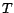
de la onda y el parámetro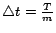
unidades de tiempo, en los instantes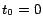
,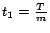
,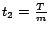
, ...,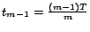
.La figura 4 muestra un ejemplo de los pasos necesarios para obtener las dos primeras filas de la tabla:
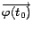
y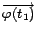
, aplicado a un robot de seis articulaciones. Comenzando con el robot situado sobre el eje x y una onda sinusoidal en el instante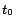
, el vector se calcula ``ajustando el robot a la onda'', como se explicó en el apartado 3.1. Después se incrementa el tiempo obteniéndose una nueva onda desplazada y finalmente se ajusta el robot a esta nueva onda, obteniéndose . Repitiendo sucesivamente los pasos 1 y 2, se obtienen los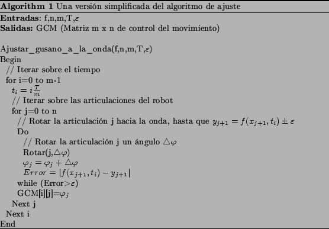
|
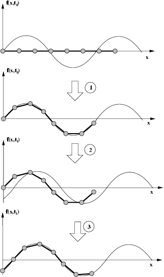 |
Figure 4: Ejemplo del algoritmo usado para generar las tablas de control. Se calculan las dos primeras filas de la tabla.
El pseudo código se muestra en el algoritmo 1. Los parámetros de entrada son:
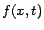
: Ecuación de la onda : Número total de articulaciones
: Número total de articulaciones
 :
Número de muestras temporales
:
Número de muestras temporales
: Periodo de la onda
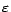
: Máximo error permitido en la aproximaciónLa salida es la matriz
 x
x de control del movimiento. El algoritmo se puede emplear para
cualquier tipo de onda, sin embargo, para las pruebas de
locomoción se han empleado ondas sinusoidales.
de control del movimiento. El algoritmo se puede emplear para
cualquier tipo de onda, sin embargo, para las pruebas de
locomoción se han empleado ondas sinusoidales.


Next: 4
Implementación en procesadores Up: 3
Algoritmo de locomoción Previous: 1
Cálculo del vector